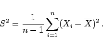
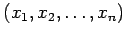
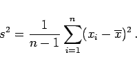
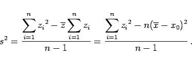
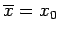
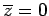
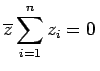

Inhalt Index DeskTop Bronstein

 Wahrscheinlichkeitsrechnung und Mathematische Statistik Mathematische Statistik Stichprobenfunktionen Stichprobenfunktionen
Wahrscheinlichkeitsrechnung und Mathematische Statistik Mathematische Statistik Stichprobenfunktionen Stichprobenfunktionen


Die Streuung S2 der Zufallsveränderlichen Xi mit dem Mittelwert  lautet:
lautet:
|  | (16.125a) |
Im konkreten Fall lautet die Streuung s2 zur Stichprobe 
|  | (16.125b) |
Mit dem Schätzwert x0 ergibt sich
|  | (16.125c) |
Für  wird wegen  die Korrektur .